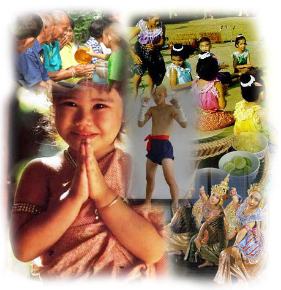

🙏🏻 การไหว้..วัฒนธรรมที่ต้องอนุรักษ์ไว้
“ไปลา–มาไหว้” คือมารยาทไทยที่ใช้แสดงความเคารพและให้เกียรติซึ่งกันและกัน
นอกจากคำว่า “สวัสดี” การไหว้สะท้อนถึงความอ่อนน้อมและสัมมาคารวะ
ซึ่งเป็นเอกลักษณ์สำคัญของคนไทย
การไหว้เป็นภาษาท่าทางที่ใช้ทักทาย ขอบคุณ ขอโทษ หรือยกย่อง
มีรากฐานทางวัฒนธรรมที่ได้รับอิทธิพลจากอินเดีย และถูกปรับให้เหมาะกับวิถีชีวิตไทย
จนกลายเป็นมรดกทางวัฒนธรรมที่งดงาม
ระดับของการไหว้ (๓ ระดับ)
- ระดับที่ ๑ ไหว้พระรัตนตรัย – นิ้วหัวแม่มือจรดระหว่างคิ้ว
- ระดับที่ ๒ ไหว้พ่อแม่ ครู อาจารย์ – นิ้วหัวแม่มือจรดปลายจมูก
- ระดับที่ ๓ ไหว้บุคคลทั่วไปที่อาวุโสกว่า – นิ้วหัวแม่มือจรดปลายคาง
ลักษณะการไหว้ที่ถูกต้อง
- ชาย – ยืนตรง ค้อมตัวเล็กน้อย ยกมือไหว้ตามระดับที่เหมาะสม
- หญิง – ถอยเท้าเล็กน้อย ย่อตัวพร้อมยกมือไหว้ หรือยืนตรงไหว้แบบชายก็ได้
- การรับไหว้ – ประนมมือระดับอก เพื่อแสดงความใส่ใจและตอบรับอย่างสุภาพ
แม้ปัจจุบันวัฒนธรรมตะวันตกจะเข้ามามีอิทธิพลมากขึ้น
แต่การไหว้ยังคงเป็นมารยาทที่สะท้อนความงดงามของความเป็นไทย
ควรค่าแก่การอนุรักษ์และสืบสานต่อไป
แหล่งที่มา : คณะกรรมการเอกลักษณ์ของชาติ, กรมส่งเสริมวัฒนธรรม